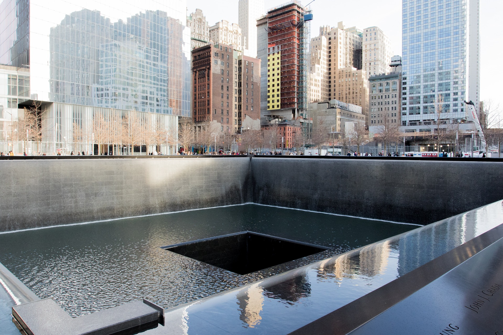
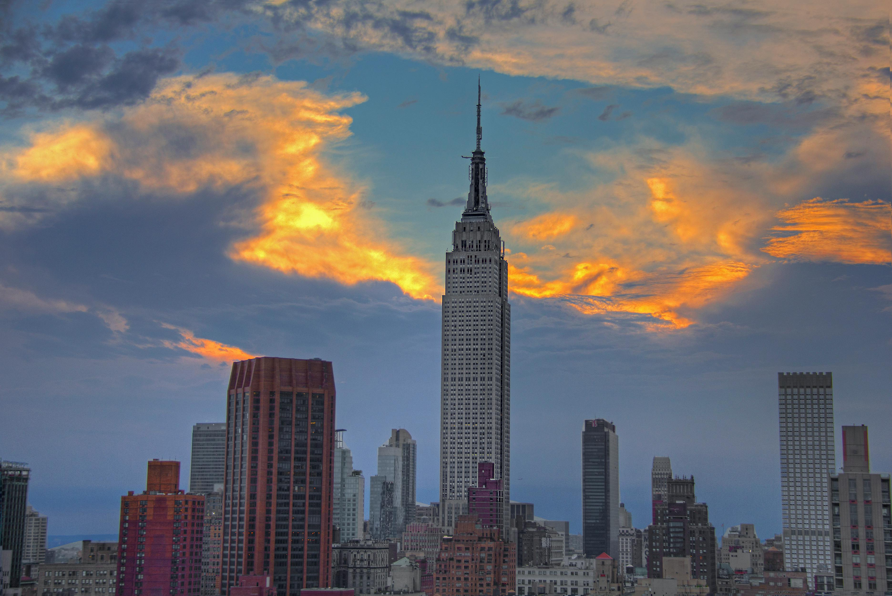
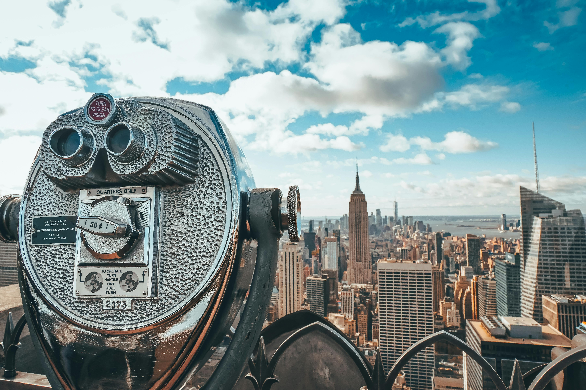
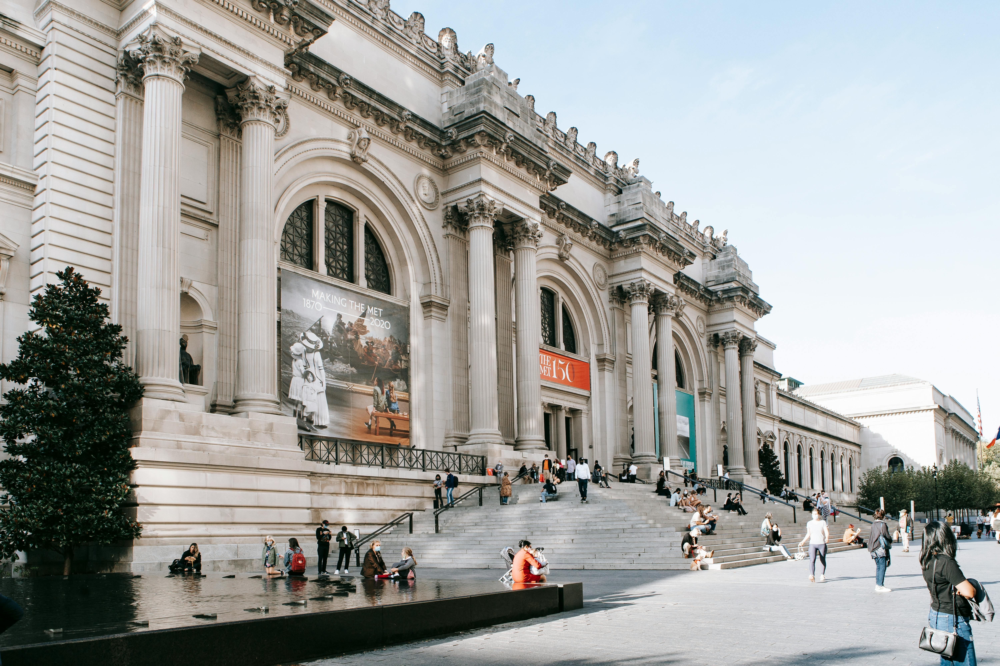

Descubre los lugares más emblemáticos de la ciudad de Nueva York.
Estatua de la Libertad
La Estatua de la Libertad, un símbolo icónico de libertad, fue un regalo de Francia a
Estados Unidos en
1886.
Ubicada en Liberty Island como un faro de bienvenida para los inmigrantes. Con 93 metros de altura,
representa la democracia y los derechos humanos.
Es un destino turístico clave, donde los visitantes pueden explorar su historia y disfrutar de vistas
impresionantes de la ciudad de Nueva York.
Central Park
Central Park es un gran parque urbano ubicado en el corazón de Manhattan.
Ofrece grandes espacios verdes, lagos, senderos para caminar y áreas recreativas,
siendo un refugio tranquilo en medio de la ciudad. Es popular para hacer picnic,
andar en bicicleta y disfrutar de actividades al aire libre. Además, alberga monumentos,
teatros y jardines, convirtiéndolo en un importante destino turístico.
Times Square
Times Square es un famoso distrito en Manhattan, conocido por sus gigantescas pantallas electrónicas y
luces brillantes.
Es el centro del entretenimiento en Nueva York, con numerosos teatros de Broadway, tiendas y
restaurantes.
El área es especialmente vibrante durante la víspera de Año Nuevo, cuando miles de personas se reúnen
para el tradicional descenso de la bola.
Es un lugar icónico que refleja la energía y el dinamismo de la ciudad.
El puente de Brooklyn
El Puente de Brooklyn es uno de los iconos más famosos de Nueva York, conectando Manhattan y Brooklyn
sobre el río East.
Inaugurado en 1883, fue el primer puente colgante de acero del mundo y es un logro histórico de
ingeniería.
Con sus impresionantes torres de estilo neogótico y cables suspendidos, ofrece vistas panorámicas de la
ciudad y del río.
Es un lugar popular para caminar, andar en bicicleta y tomar fotografías.

Memorial del S11
El Memorial del 11 de Septiembre, ubicado en el World Trade Center de Nueva York, honra a las víctimas de
los atentados de 2001 y 1993.
Su diseño cuenta con dos enormes piscinas cuadradas que marcan las huellas de las Torres Gemelas,
rodeadas por paneles de bronce donde están grabados los nombres de las víctimas.
Las cascadas en las piscinas simbolizan la pérdida y la renovación, mientras que el espacio es un lugar
de reflexión y recuerdo.

Empire State Building
El Empire State Building es uno de los rascacielos más icónicos de Nueva York y del mundo, ubicado en el
corazón de Manhattan.
Inaugurado en 1931, este edificio Art Deco se eleva a 443 metros y fue el más alto del mundo durante
décadas.
Sus miradores en los pisos 86 y 102 ofrecen vistas panorámicas impresionantes de la ciudad.
El edificio es famoso por sus luces en la cima, que cambian de color para celebrar distintos eventos y
ocasiones

Observatorio Top of the Rock
El Observatorio Top of the Rock, ubicado en la cima del Rockefeller Center en Nueva York,
ofrece algunas de las vistas más espectaculares de la ciudad.
A diferencia de otros miradores, permite una visión clara del Empire State Building, Central Park y el
resto del icónico skyline de Manhattan.
Sus tres niveles de observación, tanto interiores como al aire libre, brindan una experiencia cómoda y
panorámica.
Gran Central Terminal
Grand Central Terminal es una de las estaciones de tren más grandes y famosas del mundo,
situada en el centro de Manhattan, Nueva York. Inaugurada en 1913, su arquitectura Beaux-Arts y su
imponente vestíbulo la convierten en una joya histórica y cultural.
El techo del vestíbulo principal está decorado con un mural de constelaciones, que atrae a visitantes y
locales por igual.

Museo Metropolitano de Arte
El Museo Metropolitano de Arte, conocido como el Met, es uno de los museos más grandes y prestigiosos del
mundo. Ubicado en Manhattan, alberga una vasta colección que abarca desde arte antiguo y medieval hasta
obras
contemporáneas.
Su impresionante arquitectura y extensas galerías lo convierten en un destino cultural imprescindible.
El museo cuenta con más de dos millones de obras,
incluyendo pinturas, esculturas, arte decorativo y artefactos históricos.
The Oculus
El Oculus, ubicado en el World Trade Center de Nueva York, es un complejo comercial
Inaugurado en 2016,
su estructura futurista y esquelética, inspirada en una paloma en vuelo, es un símbolo de renacimiento y
esperanza tras los atentados del 11 de septiembre.
Es un espacio multifuncional y turístico. Su diseño con un techo elevado y lleno de luz natural brinda
una atmósfera única.
Es un ejemplo de la arquitectura moderna de Nueva York y un tributo a su resiliencia.